USER MANUAL
光学デバイス（干渉計測）で求めた面形状を、表示・測定・保存するための操作ガイド
装置で撮った干渉画像から 物の表面の凹凸（高さマップ） を求め、ブラウザで立体的に見ながら、 長さ・断面・高さのばらつき を測って保存するアプリです。 他の測定器（Keyence・WI5000 など）の高さマップ CSV を読み込んで、同じように見ることもできます。
data/row_data/）／高さマップ CSV／点群形式 CSVstart_mac.sh を実行（2章）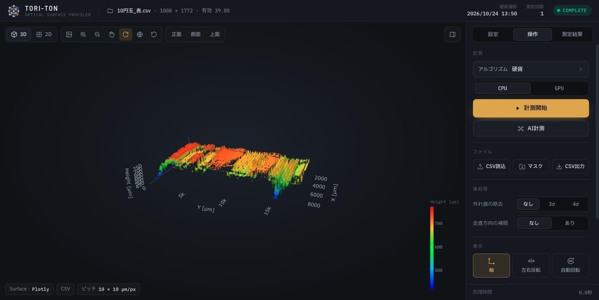
1 2 3 4 5 6 7 8 9| 番号 | 場所 | 中身 |
|---|---|---|
| 1 | 表示中のデータ | ファイル名（計測ならフォルダ名）、高さマップの大きさ（行 × 列）、有効率（値がある画素の割合）。右側に最新撮影の日時と測定回数 |
| 2 | 状態 | READY（待機中）／RUNNING（計測中）／COMPLETE（表示中） |
| 3 | ツールバー | 3D/2D の切り替え、画像保存、ズーム、パン、回転、視点リセット（3.2・4章） |
| 4 | 視点のプリセット | 正面・側面・上面へ一発で向きを変える（3D のときだけ） |
| 5 | パネルを隠す | 右のサイドパネルを隠してプロットを全幅にする。もう一度押すと戻る |
| 6 | サイドパネル | 「設定」「操作」「測定結果」の 3 つのタブ。ふだん使うのは 操作 タブ |
| 7 | プロット | 面（Surface）または点群（Point Cloud）の表示。ドラッグで回転、ホイールでズーム |
| 8 | 色バー | 色と高さの対応。ドラッグで好きな位置に動かせる。範囲は設定タブで変えられる（5章） |
| 9 | 情報チップ | 描画モード・エンジン、データの出どころ（CSV／デバイス）、ピッチ（1画素あたりの長さ） |
| 項目 | 内容 |
|---|---|
| PC | Mac（セットアップ済みのもの）。初めて使う PC は デプロイ手順 の「初回セットアップ」を先に済ませてください |
| ブラウザ | Chrome を推奨（起動すると既定のブラウザが自動で開きます） |
| 画面サイズ | 横 1440 × 縦 900 以上を推奨。狭い画面ではサイドパネルを隠すとプロットが広くなります |
| 計測するとき | 装置の撮影画像を data/row_data/ に置いておきます（CSV を見るだけなら不要） |
% cd ~/Documents/optical-device-ui
start_mac.sh を実行します。
% ./start_mac.sh ======================================== 3D Surface Measurement UI ======================================== [1/2] バックエンドを起動しています... INFO: Uvicorn running on http://0.0.0.0:8000 [2/2] フロントエンドを起動しています... VITE v7.x ready ➜ Local: http://localhost:5173/ WebSocket connected
READY になっていることを確かめてください。
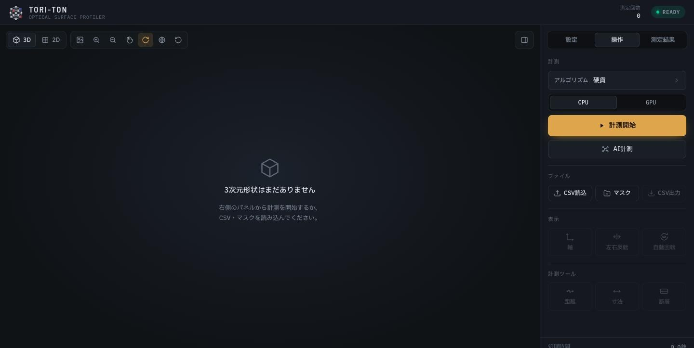
ターミナルに GET /json/version ... 404 Not Found や GET / ... 404 Not Found と出ることがありますが、ブラウザの開発ツールなどが問い合わせているだけで、動作には関係ありません。
ブラウザが開かないときは、自分で http://localhost:5173 を開いてください。
起動したターミナルで Ctrl + C を押します。ターミナルを閉じてしまったときは、別のターミナルで ./stop_mac.sh を実行すると止まります。
測定履歴（3.5）はブラウザに保存されているので、終了しても消えません。
データの出し方は 4 通りです。どれも右の 操作 タブから行います。
| やりたいこと | ボタン | 説明 |
|---|---|---|
| 装置で計測する | ▶ 計測開始 | data/row_data/ の画像を画像処理で解析します。ふだんはこちら |
| AI で計測する | AI計測 | 同じ画像を AI（学習済みモデル）で解析します。縞が見えにくい画像に強い |
| CSV を見る | CSV読込 | 高さマップ CSV（Keyence・WI5000・このアプリで書き出したもの）や点群形式 CSV を開きます |
| 前回の AI 結果を見る | マスク | 直近の AI 計測の結果（data/mask_result/）を開きます |
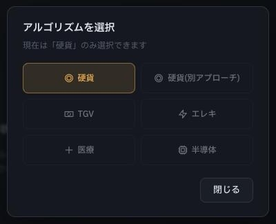
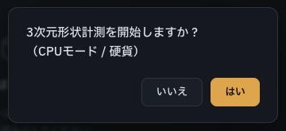
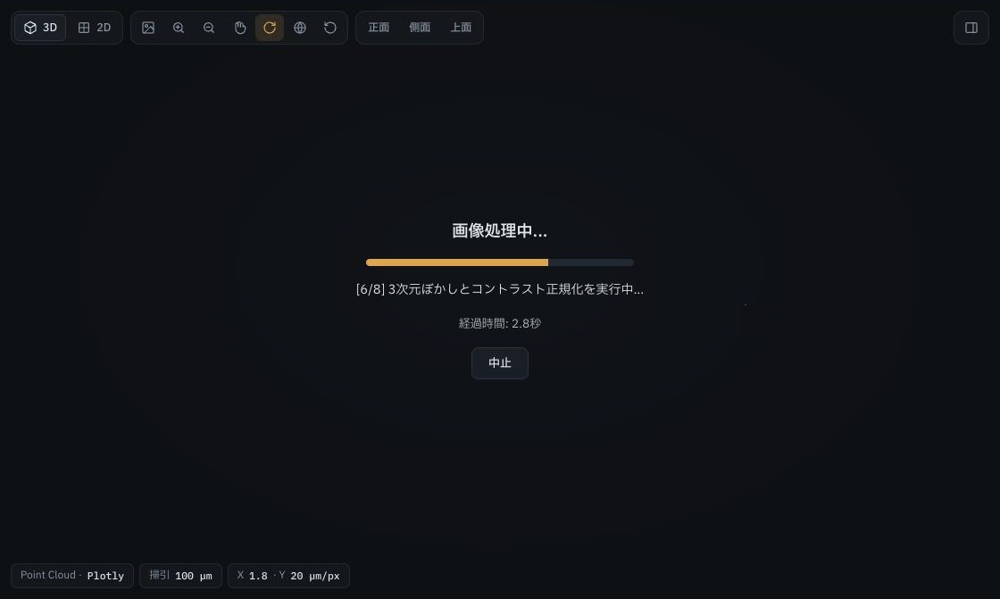
中止 を押すと、区切りのよいところ（画像処理は工程ごと、AI は 1 枚ごと）で止まります。AI を中止したときは途中までの結果は残りません。
このアプリで書き出した CSV は、ファイル名にピッチと高さの単位が入っている（例: …_pitch10x10um_zum.csv）ので、読み込むと自動で設定に反映されます。
| 操作 | 動き |
|---|---|
| 左ドラッグ | 回転（ツールバーでパンを選んでいるときは平行移動） |
| 右ドラッグ（three.js 表示） | 平行移動 |
| ホイール | ズーム |
| カーソルを載せる | その点の座標と高さを表示 |
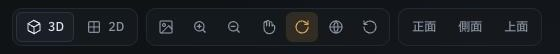
1 2 3 4 5 6 7 8 9 10よく使うのは次の 3 つです。
Plotly 表示のパンは、マウスの動きより大きく動きます。面が画面の外へ出て「消えた」ように見えたら、視点リセット（9）を押してください。
| 項目 | 選べるもの |
|---|---|
| 描画モード | Surface（面でつないで表示）／Point Cloud（点の集まりで表示） |
| エンジン | Plotly（既定。軸と目盛り付き、ホバーで値が読める）／three.js（なめらかで速い。点群は高密度、面は CAD 風の陰影付きメッシュ） |
| 軸 | 軸と目盛りの表示・非表示 |
| 左右反転 | CSV では左右の鏡映。装置の計測データでは 深さの反転（意味が違うので注意） |
| 自動回転 | 3D をターンテーブルのように回し続けます（展示向け） |
| 奥行きの強調 | 点群のとき。奥行き方向の見た目だけを ×0.5〜×20 に伸ばします（値は変わりません）。ダブルクリックで ×1 |
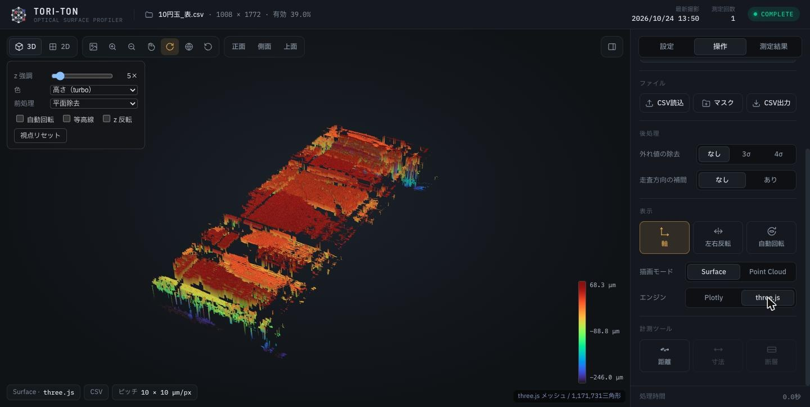
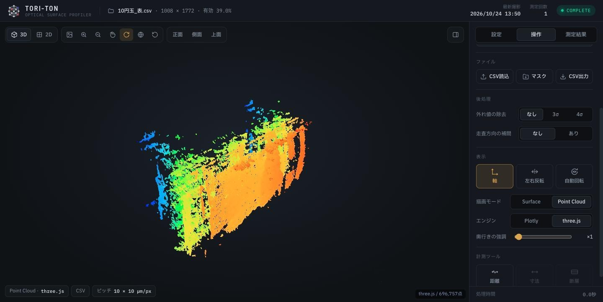
操作タブの一番下「計測ツール」に 3 つの道具があります。押すとオン、もう一度押すとオフです。
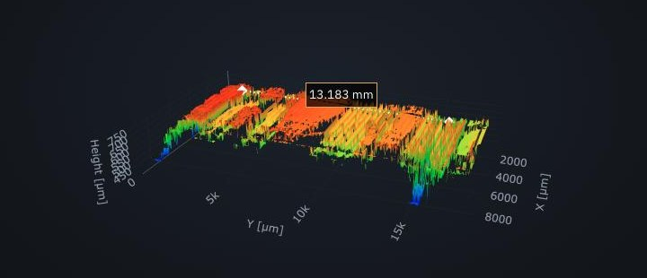
値の無いところ（黒く抜けた欠損）をクリックしても点は打てません。
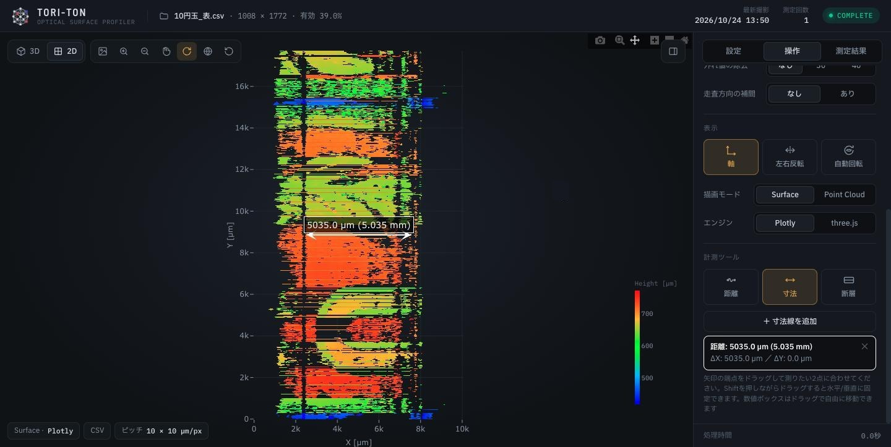
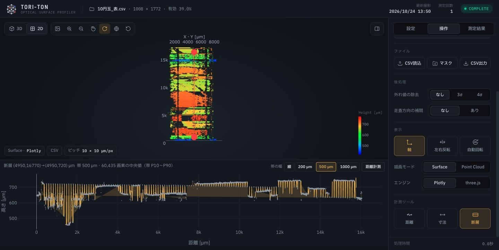
断面の上で長さと段差を測る： 断面パネル右上の 距離計測 を押し、グラフ上で 2 点をクリックすると、距離と Δ深さ（高さの差）が出ます。端の点はドラッグで動かせます。
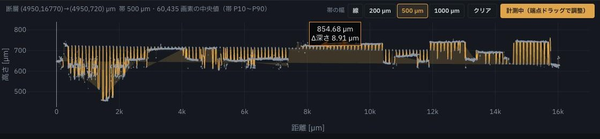
測定結果 タブに、表示中のデータの統計が出ます。
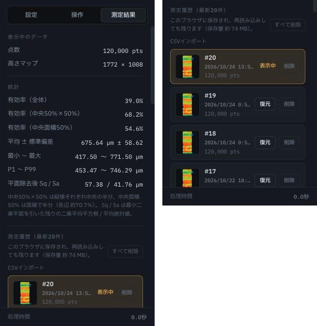
| 項目 | 意味 |
|---|---|
| 有効率 | 値のある画素の割合。全体・中央50%×50%・中央面積50% の 3 通り |
| 平均 ± 標準偏差 | 高さの平均とばらつき |
| 最小〜最大、P1〜P99 | 高さの範囲（P1〜P99 は極端な 1% ずつを除いた範囲） |
| 平面除去後 Sq / Sa | 傾きを引いたあとの凹凸の大きさ（二乗平均平方根 / 平均絶対値） |
操作タブの「後処理」で、飛び出た値（外れ値）を取り除いたり、抜けた行を埋めたりできます。元のデータは変わらないので、なし に戻せばいつでも元どおりです。
| 項目 | 内容 |
|---|---|
| 外れ値の除去 | なし / 3σ / 4σ。数字が小さいほど多く取り除きます。迷ったら 3σ |
| 外れ値の基準 | 近傍（既定）… 周りと比べて突き出た点だけを取る。凹凸や段差は残る／全体 … 面全体と比べる。起伏の大きい面では本物の凹凸まで消えることがある |
| 走査方向の補間 | 走査の行の抜け（8 行以下）を周りの値で埋めます |
| 補った画素の印 | 埋めた画素をマゼンタ色で区別します（隠す で非表示） |
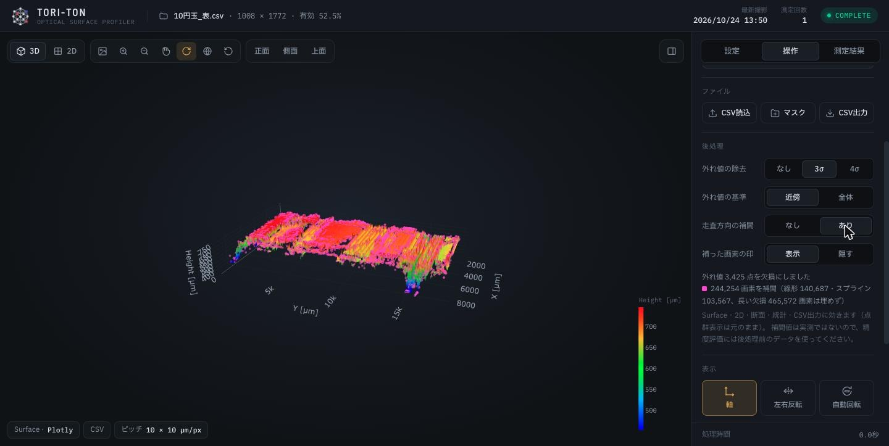
補った値は実測ではありません。 精度を評価する（正解データと比べる）ときは、後処理を「なし」にした元のデータを使ってください。
| 保存するもの | 操作 | 中身 |
|---|---|---|
| 高さマップ（CSV） | 操作タブ CSV出力 | 表示中の高さマップを µm で書き出します（左右反転・後処理も反映）。ファイル名にピッチと単位が入るので、読み込み直すと設定が戻ります |
| 画像（PNG） | ツールバー 3 | 今の見た目を 1920×1080 の PNG（黒背景）で保存します |
| 測定履歴 | 自動 | 計測・読み込みのたびに、最新 20 件をこのブラウザに自動で保存します |
書き出したファイル名の末尾で、条件がわかるようになっています。
| 付く文字 | 意味 |
|---|---|
_pitch10x10um | ピッチ（列 10 µm × 行 10 µm） |
_zum / _zpx | 高さの単位（µm／画素） |
_hampel3 / _mad3 | 外れ値の除去（近傍 3σ／全体 3σ） |
_interp | 走査方向の補間あり |
| 番号 | ボタン | 働き |
|---|---|---|
| 1 | 3D | 立体で表示 |
| 2 | 2D | 真上から表示（寸法・断層はここで使う） |
| 3 | 画像保存 | PNG（1920×1080、黒背景）で保存 |
| 4 | ズームイン | 寄る |
| 5 | ズームアウト | 引く |
| 6 | パン | 左ドラッグで平行移動。もう一度押すと回転に戻る |
| 7 | 回転（ターンテーブル） | 上下を保ったまま回す（既定） |
| 8 | 回転（自由回転） | どの向きにも回せる（three.js では 7 と同じ動き） |
| 9 | 視点リセット | 向き・ズーム・位置を最初に戻す |
| 10 | 正面・側面・上面 | 決まった向きから見る（3D のときだけ） |
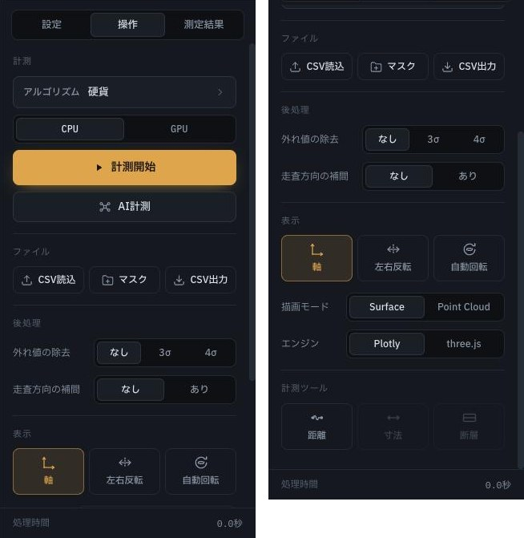
| 区画 | ボタン | 働き |
|---|---|---|
| 計測 | アルゴリズム | 解析のやり方を選ぶ（いまは「硬貨」のみ） |
| CPU / GPU | 計算に使う部品。Mac は CPU | |
| ▶ 計測開始 | 画像処理で計測（3.1） | |
| AI計測 | AI で計測（3.1） | |
| ファイル | CSV読込 | CSV を開く |
| マスク | 直近の AI 計測の結果を開く | |
| CSV出力 | 表示中の高さマップを CSV で保存（3.5） | |
| 後処理 | 外れ値の除去・補間 | 3.4 を参照（高さマップがあるときだけ出る） |
| 表示 | 軸・左右反転・自動回転 | 3.2 を参照 |
| 描画モード・エンジン | Surface / Point Cloud、Plotly / three.js | |
| しきい値（AI）・色分け | AI の結果のときだけ出る。しきい値を動かすと計測し直さずに縞を抜き出し直す。点群のとき色分けを「信頼度」にすると、AI が自信のない所が青くなる | |
| 計測ツール | 距離・寸法・断層 | 3.3 を参照 |
長さの換算と色の範囲を決めます。設定はブラウザに保存され、次に開いたときも残ります。いま効いている区画には 表示中 の印が付きます。
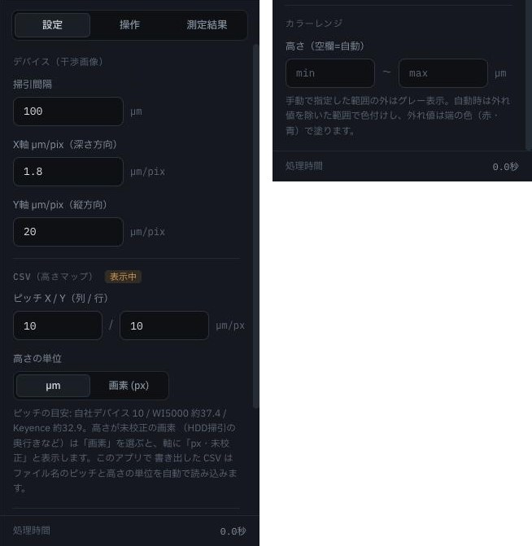
| 区画 | 項目 | 既定 | 説明 |
|---|---|---|---|
| デバイス （装置で計測したデータ） | 掃引間隔 | 100 µm | 撮影 1 枚ごとの移動量（行の間隔） |
| X軸 µm/pix | 1.8 | 画像の横 1 画素あたりの深さ | |
| Y軸 µm/pix | 20 | 画像の縦 1 画素あたりの長さ（列の間隔） | |
| CSV （読み込んだデータ） | ピッチ X / Y | 10 / 10 | 1 画素あたりの長さ。自社デバイス 10、WI5000 約 37.4、Keyence 約 32.9 |
| 高さの単位 | µm | CSV の高さが画素のときは「画素 (px)」にする（µm/px を入れれば換算） | |
| カラーレンジ | 最小〜最大 | 空欄（自動） | 色を付ける高さの範囲。範囲の外はグレー。空欄なら外れ値を除いた範囲で自動 |
ピッチや µm/pix が違うと、距離・寸法・断面の長さがすべてずれます。測る前に左下のチップでピッチを確かめてください。
有効率は「どの範囲で」を必ず添えてください。 全体・中央50%×50%・中央面積50% で大きく違います（例: 1円玉の裏で 34% / 73% / 57%）。
| 症状 | 確認すること・対処 |
|---|---|
| 表示が消えた・どこかへ行った | パンや回転で画面の外へ出ただけです。ツールバーの 視点リセット（9）を押してください。パンを使い終わったら、パンのボタンをもう一度押して回転に戻しておきます |
| 「バックエンドに接続できませんでした」と出る | バックエンド（計測を受け持つ部分）が動いていません。ターミナルで start_mac.sh が動いているか確かめ、止まっていれば起動し直してください（2.2） |
| ブラウザが開かない | 自分で http://localhost:5173 を開いてください |
ターミナルに 404 Not Found が出る | 問題ありません（2.2 のメモ） |
| 計測がなかなか終わらない | 画像の枚数が多いと数分かかります。進み具合の工程と経過時間を見てください。やめるときは 中止 |
| 長さ・寸法がおかしい | ピッチ（CSV）や µm/pix（デバイス）の設定を確かめてください（5章）。左下のチップに今の値が出ています |
| 寸法・断層のボタンが押せない | 2D 表示で、高さマップがあるデータのときに使えます。点群形式 CSV では使えません |
| 後処理の区画が出ない | 高さマップが無いデータ（点群形式 CSV）では出ません |
| three.js で回転が 2 種類とも同じ | three.js では「ターンテーブル」と「自由回転」は同じ動きです |
| 測定履歴が消えた | 履歴はブラウザごとの保存です。別のブラウザ・別の PC、またはブラウザのデータを消すと見えなくなります。残したい結果は CSV で書き出してください |
| 「未保存（この回だけ）」と出る | ブラウザの保存容量が足りません。測定結果タブで古い履歴を削除してください |
| 画面が重い | エンジンを three.js にすると軽くなります。後処理や断層の帯は計算に少し時間がかかります |
| 用語 | 意味 |
|---|---|
| 掃引 | 光学系を少しずつ動かしながら連続で撮影すること。撮影 1 枚が高さマップの 1 行になる |
| 干渉縞（縞） | 光の干渉で明るくなる線。縞の横位置がその点の深さを表す |
| 高さマップ | 行 × 列 のマス目に高さを入れたもの。値の無いマス（欠損）を含む |
| 点群 | 高さマップの各点を 3 次元の点として並べたもの |
| 有効率 | 値のある画素の割合 |
| ピッチ | 1 画素あたりの長さ（µm） |
| 外れ値 | 周りから大きく飛び出た値（計測の失敗であることが多い） |
| σ（シグマ） | ばらつきの大きさの単位。3σ は「ばらつきの 3 倍より外れたら外れ値」という意味 |
| マスク | 画像の中で縞の画素だけを白にした画像（AI の出力） |
| Sq / Sa | 面の凹凸の大きさ（二乗平均平方根 / 平均絶対値） |
| P10 / P90 | 小さいほうから 10% / 90% の位置の値 |
| フォルダ | 中身 |
|---|---|
data/row_data/ | 計測する撮影画像（img_001.png など） |
data/result/ | 計測開始（画像処理）の結果 |
data/mask_result/ | AI 計測の結果（マスク で開く） |
| 版 | 日付 | 内容 |
|---|---|---|
| 第1版 | 2026-10-24 | 初版 |